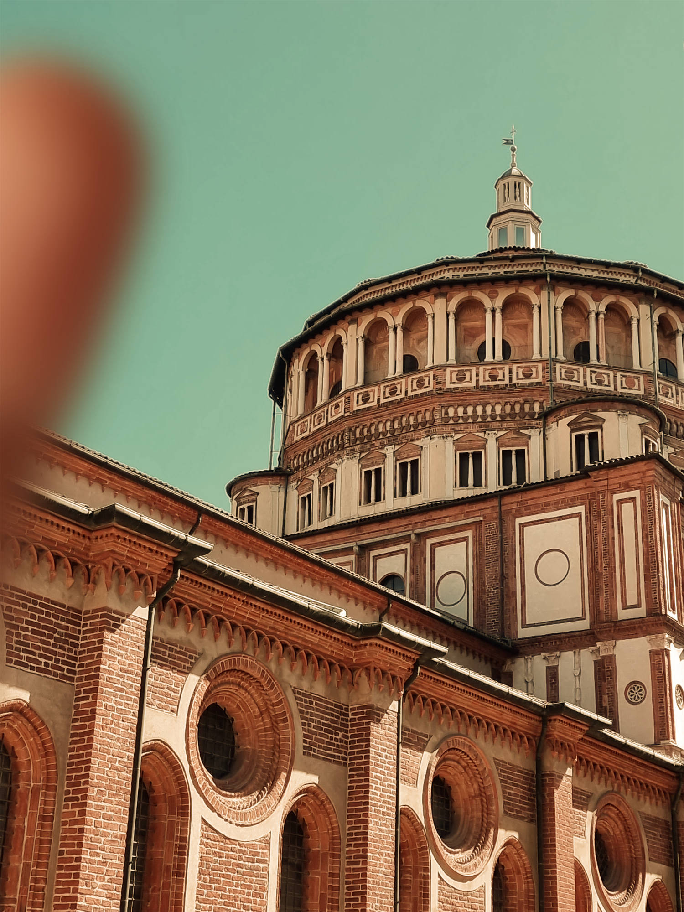
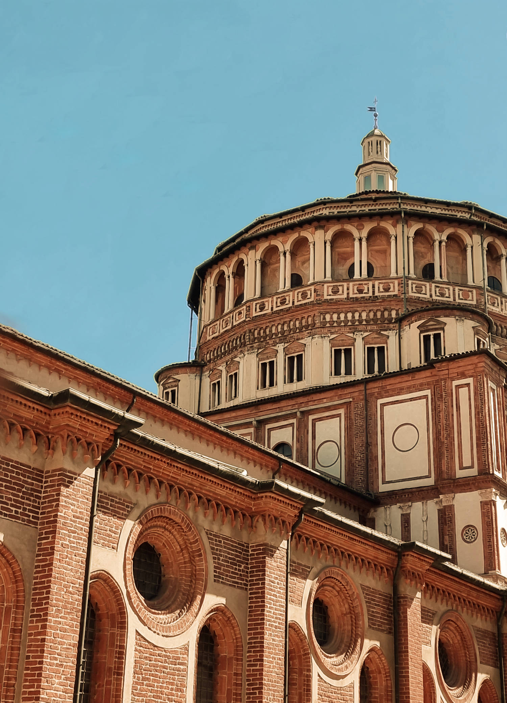
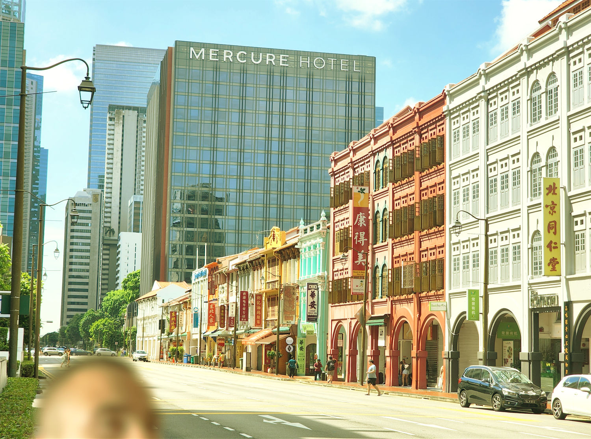
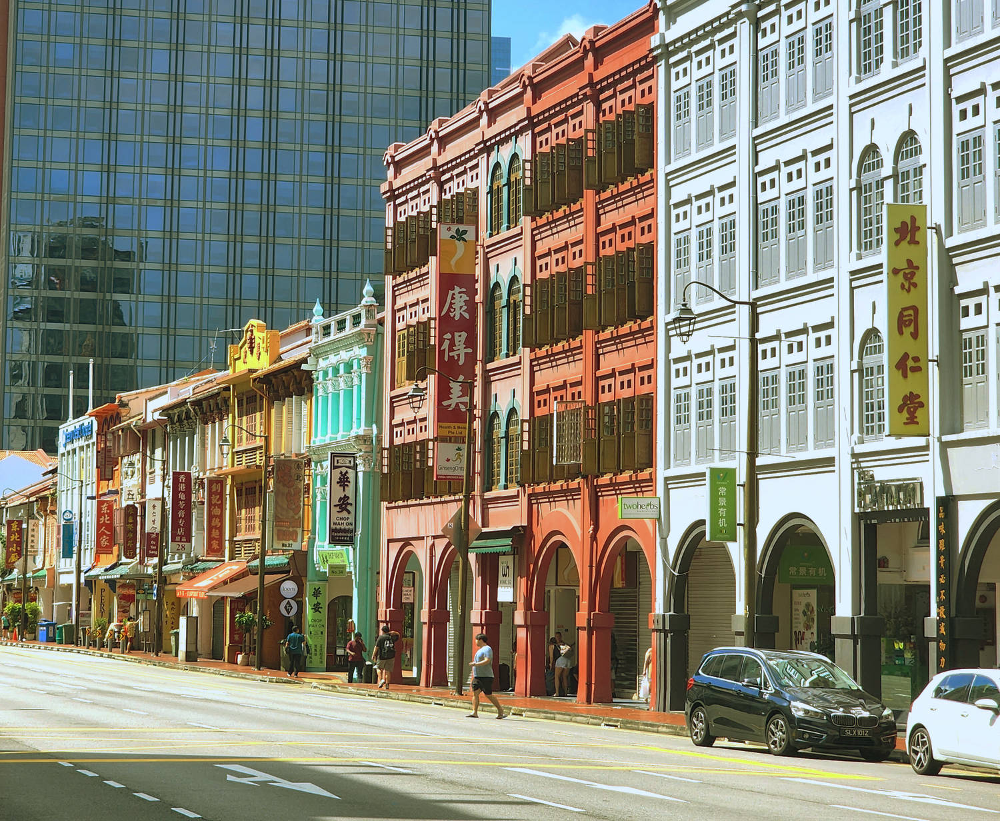
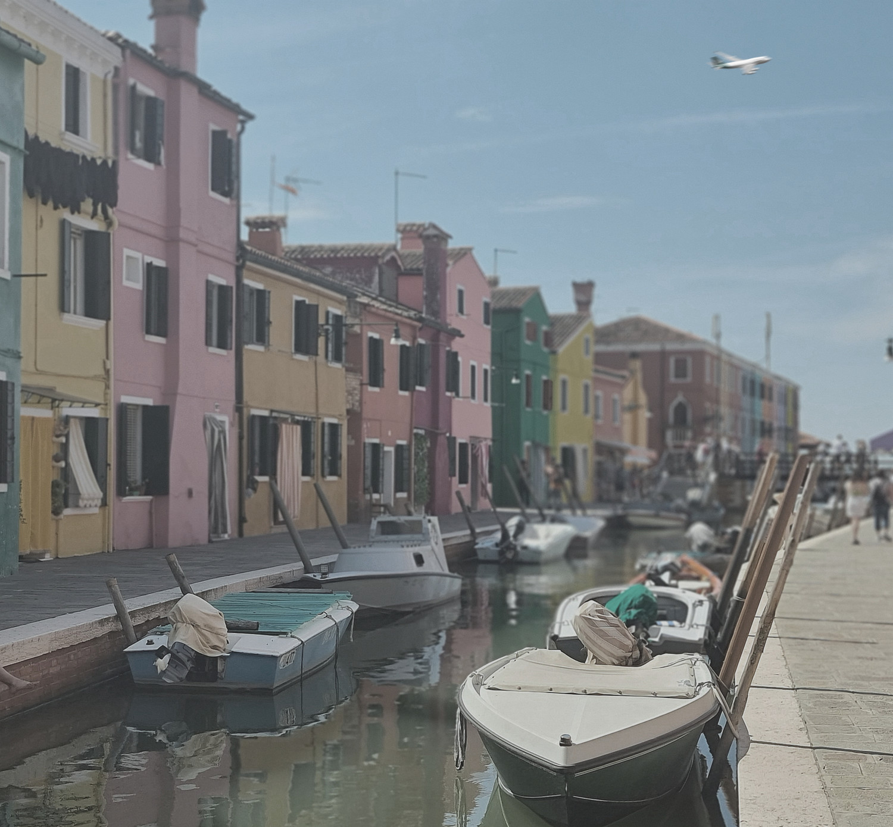
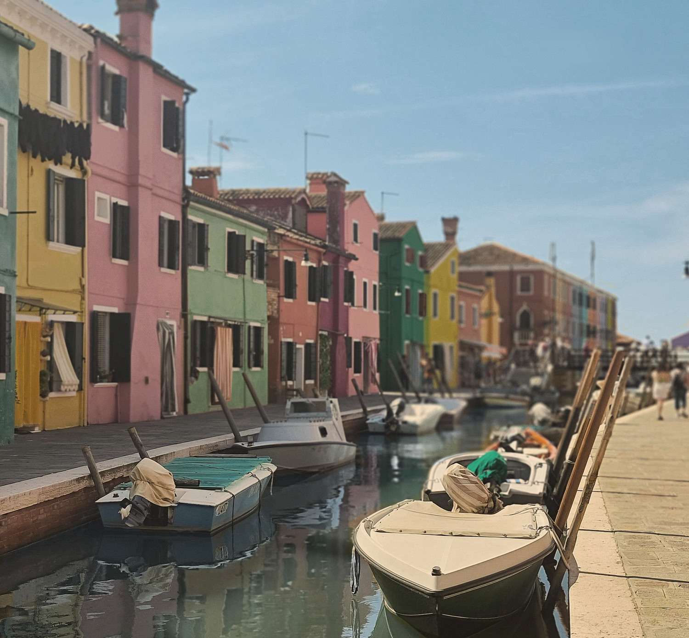

Bildredigering
Byggnader, detaljer & perspektiv
I den här laborationen har vi arbetat med grundläggande bildbehandling och hur olika redigeringstekniker
kan användas i praktiken.
Webbplatsens logotyp och favicon har skapats med hjälp av grafiska element i Canva, medan fotografierna
har redigerats i Affinity.
Vid redigering av bilder i Affinity skapades kopior av bildlagren innan redigering påbörjades, detta för
att bevara orginalbilderna.
Jag har valt att fokusera på arkitektur eftersom byggnader är något jag ofta fastnar för när jag
fotograferar.
Det fascinerar mig hur byggnader, precis som målningar, kan skilja sig åt i stil och uttryck men ändå
vara konstverk i sig.
Bild 1
Original
Redigerad bild


I bild ett började jag med att skapa ett nytt lager för att redigera bort tummen som täckte en del
av bilden.
Detta gjordes med hjälp av verktygen Patch och Clone, där jag arbetade med små områden i taget.
Bilden beskars även
minimalt för att få bort delar av tummen som var särskilt svåra att korrigera.
När objektet till största delen var borttaget skapade jag ytterligare ett lager,
där jag använde en retuscheringspensel för att jämna ut himlen efter klonverktyget.
Därefter använde jag en mask för att begränsa färgjusteringarna till himlen. Med hjälp av White
Balance korrigerade jag den
grönaktiga färgtonen till en mer naturlig blå nyans, utan att påverka byggnadens varma färger. Jag
använde även samma mask för
att minska färgmättnaden något.
Bild 2
Original
Redigerad bild


I bild två valde jag att beskära bilden för att ta bort störande element och rikta fokus mot raden
av stenbyggnader.
Huvudet i bildens nedre vänstra hörn var ett tydligt störningsmoment, men även hotellets skylt drog
uppmärksamheten från byggnaderna.
Bilden hade ursprungligen en tydlig grön underton. För att framhäva färgerna och skapa ett mer
enhetligt uttryck tillsammans med de andra bilderna
justerade jag White Balance åt både det blå och rosa hållet. Därefter använde jag Brightness för att
sänka ljusstyrkan avsevärt.
Syftet var att framhäva färger och detaljer i fasaderna, men också att skapa en känsla av tidig
eftermiddagssol som jag ville uppnå i hela bildserien.
Jag ökade även Vibrance något för att få lite klarare färger. Avslutningsvis ljusade jag upp
skuggorna och dämpade högdagrarna för att balansera ljuset i bilden.
Bild 3
Original
Redigerad bild


I bild tre började jag med att ta bort flygplanet uppe till höger och därefter foten nere till
vänster.
Detta gjordes främst med hjälp av verktyget Patch, men även Clone användes i viss utsträckning.
Enligt uppgiftens instruktioner skulle en av bilderna innehålla ett objekt som ändrat färg. Jag
valde därför
att ändra den senapsgula/bruna husfasaden till en pastellgrön nyans, för att skapa en tydligare
variation mellan
byggnaderna och samtidigt knyta an till färgerna i föregående bild. Efter att ha testat olika
metoder valde jag att
använda ett HSL-justeringslager med mask för att enbart påverka den aktuella fasaden. Jag ändrade
färgtonen mot grönt och sänkte färgmättnaden.
För att minska bildens något tonade uttryck och skapa en bättre helhet med de övriga fotografierna
höjde jag kontrasten markant.
Därefter använde jag en mask för att göra byggnadernas färger varmare och mer framträdande, utan att
påverka vattnet och himlen.
Med hjälp av White Balance justerade jag färgtemperaturen mot gult och färgtonen mot rosa. Slutligen
ökade jag färgmättnaden (Saturation)
avsevärt och höjde även Vibrance något för att ytterligare förstärka färgerna och skapa ett mer
enhetligt uttryck med de övriga bilderna.